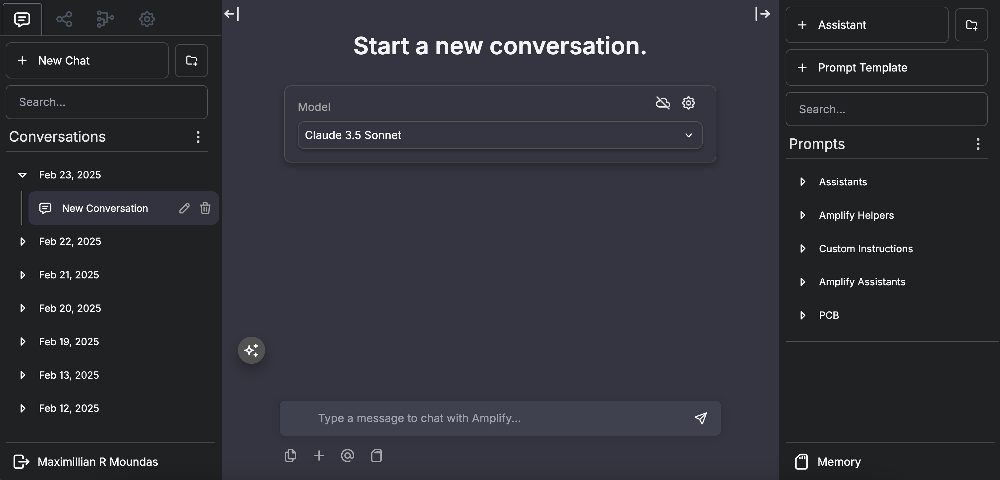
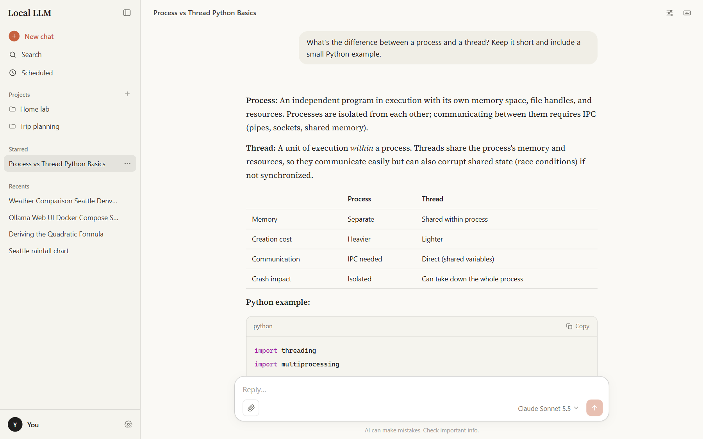
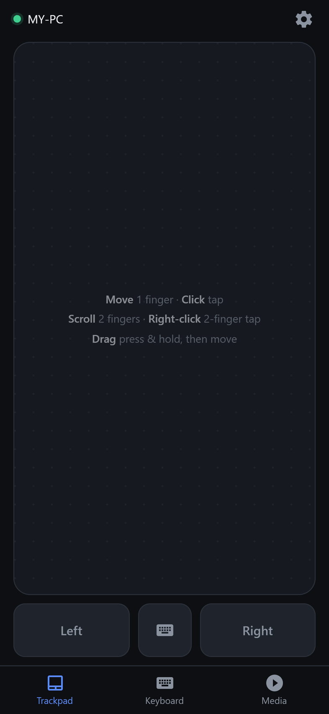
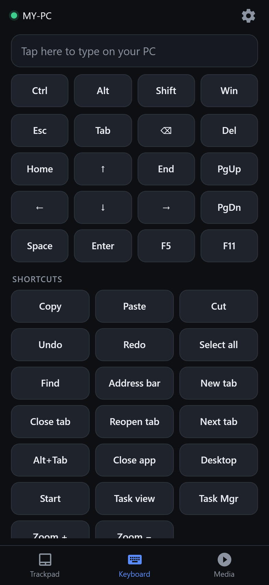
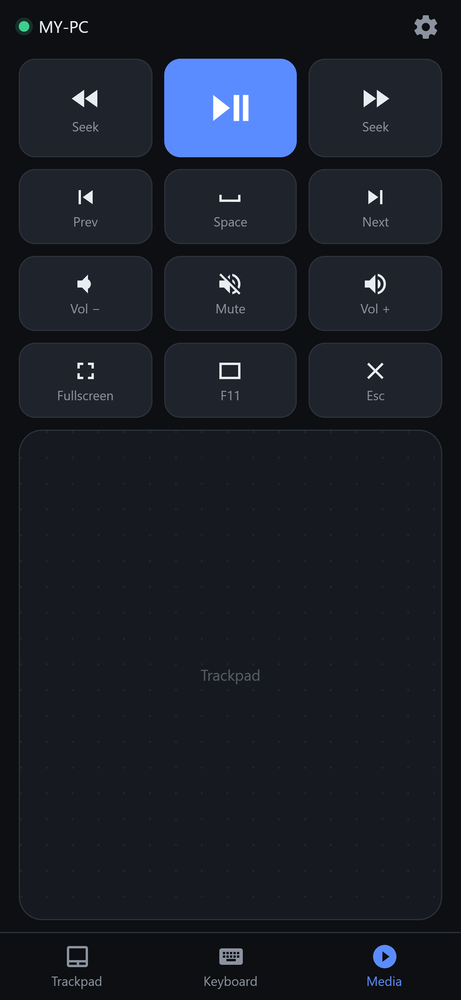

Personal Projects
Open-source projects on my GitHub
Lead Developer | Active & Ongoing

Amplify is an open-source enterprise generative AI platform built for higher education. What began as a question - can we give universities the ChatGPT experience without per-user subscription costs? - is now a nationwide reality. Amplify is deployed at Vanderbilt University (18,000+ users, $3/user/month average) and a growing community of universities across the United States, giving them full LLM access: AI assistants, agentic workflows, Office 365 integrations, file handling, and API access to models - all within a secure, cost-controlled environment built for academic use.
As a lead developer, I architected and implemented core features including memory systems, a novel RAG Fusion system, API integrations, artifact generation, and admin monitoring tools. I work alongside Jules White and a small team of engineers at Vanderbilt's Amplify Generative AI Innovation Center.
Developer | Active & Ongoing
Majk is an agentic desktop application that enables university staff and researchers to accomplish real tasks using AI - through prompting alone. While Amplify handles chat and assistants, Majk goes further: it coordinates specialized AI agents running in parallel to deliver finished work products, not just responses. Think of it as having a full AI team that picks up a task, works through it autonomously, and hands back a completed output.
Majk is designed for non-developers. It has all the power of a tool like Claude Code but with an interface built for university operations - helping staff do complex work, build AI workflows, and develop AI-powered applications without writing a line of code. Built at Vanderbilt's Amplify Generative AI Innovation Center as the appetite for agentic AI grew beyond what chat interfaces could handle.
Open-source projects on my GitHub
Personal Project | Open Source

A full-featured, self-hosted AI chat app built around a model that runs on your own GPU. Your chats, files, and memory stay on your machine, and when you want more power, the same interface can switch to Ollama, LM Studio, any OpenAI-compatible server, or cloud models from Anthropic and OpenAI - all from one model menu.
It's an agent, not just a chatbot: it plans, searches the web, reads pages, runs code in a Docker sandbox, and cites its sources, with each step shown live. It also supports MCP connectors with approval for risky actions, an OpenAI-compatible API, document and image attachments, projects, memory, scheduled prompts, local Whisper voice input, and live HTML/SVG/Mermaid previews. The built-in local model is Google's Gemma 4 E4B (about 5 GB of VRAM at 4-bit), running on CUDA GPUs or Apple Silicon.
Stack: Python, FastAPI, React, Docker, Hugging Face, MCP
Personal Project | Open Source



Turns an iPhone into a low-latency wireless trackpad, keyboard, and media remote for a Windows PC - no phone app required. Run one script on the PC, scan the QR code, and Safari becomes a remote that works in any Windows app. Handy for controlling a PC hooked up to a TV from the couch.
Input is injected through the Win32 SendInput API, the same path a physical mouse and keyboard use, over a single persistent WebSocket that batches pointer movement once per animation frame. It supports multi-finger gestures, momentum scrolling, the full iOS keyboard (including autocorrect and dictation), and media controls, secured with PIN pairing and token authentication restricted to the local network. The whole thing is about 1,400 lines of code with two dependencies.
Stack: Python, aiohttp, WebSockets, JavaScript, Win32 API